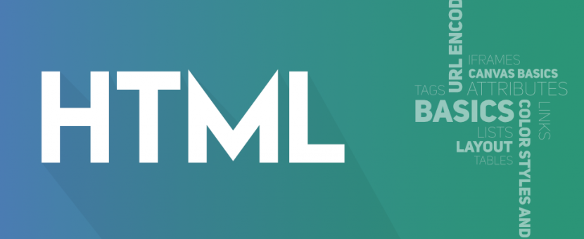

Assignment-1
This is assignment one under the course of Computer Programming and Application and i will try to describe the steps and procedures that i
used to create this website on this page. On the instruction of assignment one we have been given two options
ID linking for pages and HTML linking for pages
1. Basics of HTML

- Is the standard markup language for creating webpages.
- Sands for hyper text markup language
- HTML describes the structure of a webpage
- Consists of a series of elements
- Elements tell the browser how to display the content
- HTML elements label pieces of contents such as "this is a heading", "this is a paragraph", "this is a link", etc
A Simple HTML Document Contains
- The ! DOCTYPE HTML tag: declaration defines that this document is an HTML 5 document
- The HTML tag: root element of an HTML page
- The title tag: element that specifies a title for the HTML page(browser title bar)
- The body tag: defines the documents body and is a container for
all the visible contents
2. Basics of CSS
- CSS stands for Cascading Style Sheets
- CSS describes how HTML elements are to be displayed on screen, paper, or in other media
- CSS saves a lot of work. It can control the layout of multiple web pages all at once
- External stylesheets are stored in CSS files
- A CSS rule-set consists of a selector and a declaration block:

3. Pick a Design
After i understand the basics of HTML and CSS the next thing i did is pick a design, i have checked
different templates and sketched the design layout on a pice of paper to find the suitable design for
me, even after i have chosen my first design and started the process i have changed and altered my
design countless times.
Here are the 3 criteria you should ask yourself that will help guide you
to finding the right design for your website:
- Content Width Design:
There are two main types of content width,
(1) Full-Width and (2) Boxed-Width- Full-width is when the background image stretches the full width of your computer screen – from the left edge of your screen all the way to the right edge. So it gives the feeling that your website content has no boundaries.
- Boxed-width is when your content has a visible frame to the left and right side of the screen. So it feels like the content is “boxed” into a set area.
- Home Page Header Design:
The majority of the websites’ home pages have some sort of a header design.
It’s the section towards the top of your home page,
usually the first thing your visitors will see when they visit your website.
- Your header section needs to create awareness and understanding of what you’re all about, rather than to simply look nice.
- Menu Bar Design:
One of the most undervalued elements of a website design is the menu bar design.
This includes the menu bar types, position, and layout.
- The menu is the primary tool that your audience will use to navigate your website. It creates a road map to guide your visitors around your website and where they should focus their attention.
4. Customization with HTML and CSS
- Customize the graphics, texts, and tune everything up in general.
5. Content and Image Addition
- Customize the graphics, texts, and tune everything up in general.
6. Font and Color Choosing
- Customize the graphics, texts, and tune everything up in general.
7. Creating Additional Pages
- Customize the graphics, texts, and tune everything up in general.